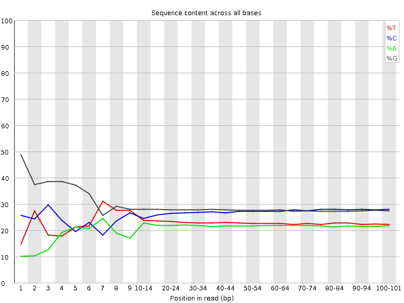
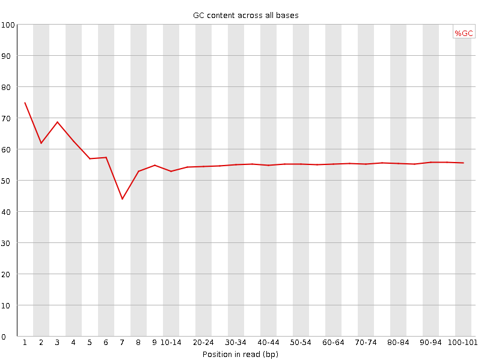
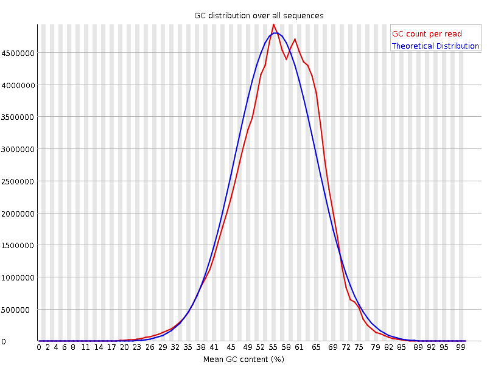
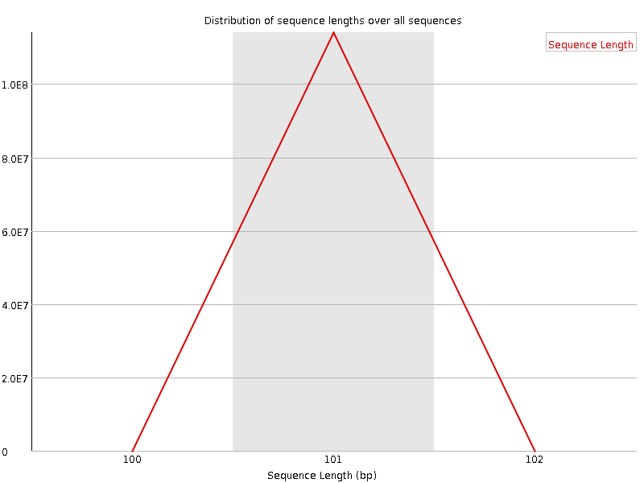
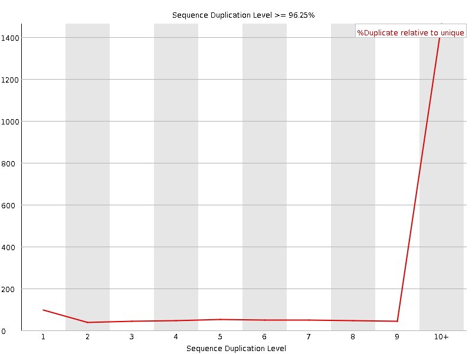
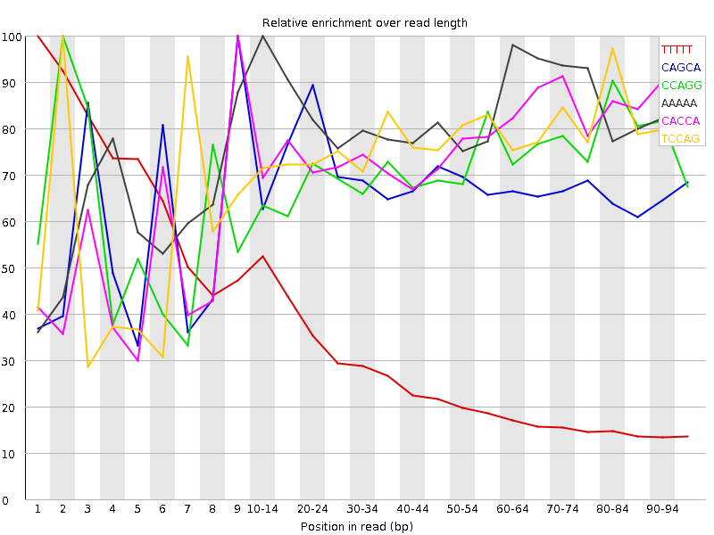

![[OK]](Icons/tick.png) Basic Statistics
Basic Statistics
| Measure | Value |
|---|---|
| Filename | SRR534291_1.fastq |
| File type | Conventional base calls |
| Encoding | Illumina 1.5 |
| Total Sequences | 114006059 |
| Filtered Sequences | 0 |
| Sequence length | 101 |
| %GC | 55 |
Per base sequence quality

Per sequence quality scores

![[FAIL]](Icons/error.png) Per base sequence content
Per base sequence content

Per base GC content

Per sequence GC content

Per base N content

Sequence Length Distribution

Sequence Duplication Levels

![[WARN]](Icons/warning.png) Overrepresented sequences
Overrepresented sequences
| Sequence | Count | Percentage | Possible Source |
|---|---|---|---|
| GGGAACTTGAATTCGTATCCATCTGGCAGCTTGACGGTCAGGTTGGCCTG | 254885 | 0.22357145070684356 | No Hit |
| GTTCAGGGGGGCCTCGGTCAGCAGCACTGGGTGCTCCTCCGGGGCCACGC | 147882 | 0.12971415843784231 | No Hit |
Kmer Content

| Sequence | Count | Obs/Exp Overall | Obs/Exp Max | Max Obs/Exp Position |
|---|---|---|---|---|
| TTTTT | 29485345 | 4.146294 | 14.890982 | 1 |
| CAGCA | 42336250 | 3.9810708 | 5.9118695 | 9 |
| CCAGG | 54812775 | 3.8942485 | 5.416262 | 2 |
| AAAAA | 17773765 | 3.4841588 | 4.229874 | 10-14 |
| CACCA | 34623615 | 3.4337044 | 4.5120735 | 9 |
| TCCAG | 37835235 | 3.3291323 | 4.348823 | 2 |
| ACCAG | 35023135 | 3.2933853 | 4.80377 | 7 |
| CTTCT | 30917440 | 3.1526659 | 4.7753034 | 6 |
| CAGGA | 35151980 | 3.1342552 | 5.6233635 | 3 |
| CAGGG | 46457840 | 3.1296654 | 5.173946 | 4 |
| TTCTT | 26009645 | 3.1145735 | 5.9971013 | 6 |
| CCAGC | 40871535 | 3.0624273 | 3.7612045 | 8 |
| TCTTC | 28398920 | 2.8958511 | 5.222136 | 7 |
| GCCAG | 37451205 | 2.660772 | 5.443475 | 1 |
| GCAGG | 37755265 | 2.54341 | 5.996319 | 2 |
| GGCAG | 34185875 | 2.3029556 | 9.355848 | 1 |
| CTGGG | 32767110 | 2.065495 | 6.5516806 | 1 |
| GGGGG | 40330400 | 1.9463583 | 5.7194214 | 3 |
| GGGCA | 27573540 | 1.857511 | 5.1843123 | 3 |
| TGGGG | 29550795 | 1.7662499 | 6.983617 | 2 |
| CTTGA | 16866410 | 1.7427979 | 5.6429076 | 6 |
| GGGAA | 18853660 | 1.5939593 | 6.992156 | 1 |
| GGGGA | 23931260 | 1.5286268 | 6.5371633 | 1 |
| GGGAG | 23560980 | 1.504975 | 5.441934 | 1 |
| AACTT | 10680415 | 1.4606901 | 5.395345 | 4 |
| GGGGT | 24260975 | 1.4500775 | 5.9738326 | 1 |
| TTGAA | 10434835 | 1.3531706 | 7.565445 | 7 |
| GTGGG | 21532470 | 1.2869949 | 7.3607073 | 1 |
| GTGGA | 14216600 | 1.124668 | 5.17798 | 1 |
| CGGGG | 20798280 | 1.0585725 | 5.543157 | 1 |
| TGAAT | 7406980 | 0.9605238 | 5.4135933 | 8 |
| GGGTT | 12733270 | 0.94257444 | 5.1030025 | 3 |
| GGCGG | 16686235 | 0.84928143 | 5.080562 | 1 |
| GCGGG | 14097415 | 0.7175178 | 5.6427813 | 1 |